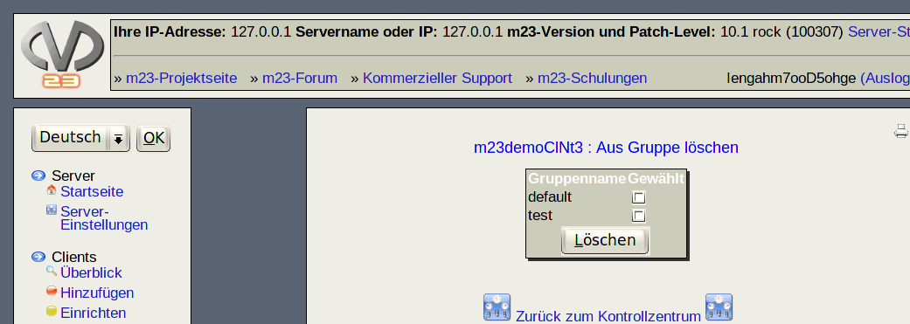

Nächste Seite:
Client wiederherstellen
Aufwärts:
Clients verwalten
Vorherige Seite:
Zur Gruppe hinzufügen
Inhalt
Aus Gruppe löschen
Wählen Sie die Gruppen durch Ankreuzen aus, aus denen der Client gelöscht werden soll und klicken anschließend auf
''Löschen''
.

root 2016-10-07